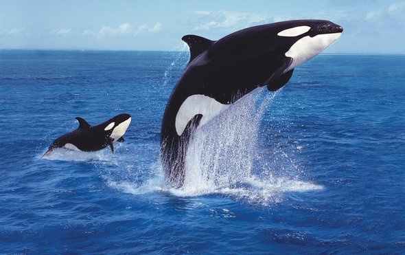

Did you know coral is a living thing and not a hard rock? Fish, sponges, sea anemones, and coral are among the many kinds of animals that live in the ocean. So are crustaceans. Those are creatures that live in shells, such as crabs, shrimp, and lobsters. Among the mammals of the water are dolphins, porpoises, and manatees. In the ocean, the smallest animals live on plants. These animals are eaten by small fish, which are eaten by larger fish, which are in turn consumed by dolphins and sharks. This is a marine food chain. How much do you know about marine animals? .
A starfish has red blood.
Not quite, try again!
You are right, well done! They have no brain and no blood. The Starfish – or Sea Star is one of the most beautiful creatures in the ocean. They cannot survive in fresh water. They usually have five arms. They can regenerate. But its takes a while. It can take up to a year for a lost limb to grow back. They eat inside out. When they capture prey, they have tiny suction cups to grab ahold of their food. Then their stomach exits their mouth to digest the food, and reenters the body when they’re done eating.
The box jellyfish is the world's most venomous animal
Correct! The top prize for “The World Most Venomous Animal,”. It’s toxins attack the heart, nervous system, and skin cells. And the worst part of it is that box jelly venom is so overpoweringly painful, that human victims go straight into shock, and drown or die of heart failure before even reaching shore. Survivors experience pain weeks after the contact with box jellies. You have virtually no chance to survive the venomous sting, unless treated immediately. After a sting, vinegar should be applied for a minimum of 30 seconds. Box jellies can be found in the waters around Asia and Australia.
Sorry,have another go!
Dolphins breathe through their gills
Good job! Dolphins are mammals and breathe air into their lungs, just like we do. Dolphins cannot breathe under water like fish can as they do not have gills. Dolphins breathe through a nostril, called a blowhole, located right on top of their heads. This allows them to take breaths by exposing just the top of their heads to the air while they are swimming or resting under the water. After each breath, the blowhole is sealed tightly by strong muscles that surround it, so that water cannot get into the dolphin’s lungs.
A Killer Whale is a dolphin.

It is!Sounds strange dosesn't it? Orcas, or killer whales, are the largest of the dolphins and one of the world's most powerful predators. They feast on marine mammals such as seals, sea lions, and even whales, employing teeth that can be four inches long. They are known to grab seals right off the ice. They also eat fish, squid, and seabirds. Orcas hunt in deadly pods, family groups of up to 40 individuals.
Tricky question right? Try again!